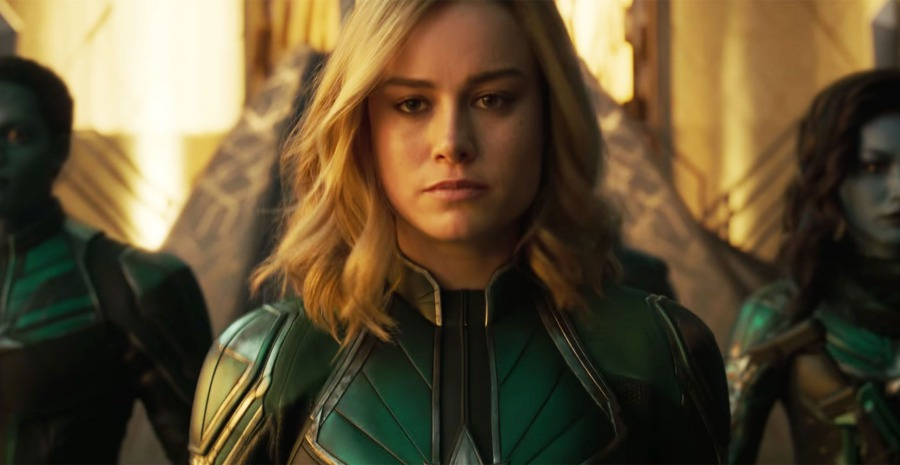

Diperankan aktris peraih piala Oscar, Brie Larson, Captain Marvel bernama asli Carol Danvers. Tokoh ini diciptakan Roy Thomas dan Gene Colan dengan nama samara Ms Marvel dengan debut di Marvel Comics pada 1977. Namun, Carol sudah diperkenalkan di dunia Marvel pada 1966.
Carol adalah anggota pasukan Angkatan Udara Amerika Serikat. Ketika sedang bertugas, dia terkena ledakan peralatan yang diciptakan Kree alien yang diperkenalkan di film pertama Guardians of the Galaxy. Akibatnya, gen manusia Carol melebur dengan DNA alien. Ini kemudian menyebabkan dia memiliki kekuatan super.
Dikutip dari CinemaBlend, Captain Marvel sangatlah kuat. Dia bisa terbang, menyerap dan melepaskan energi. Dia bahkan memiliki kemampuan prekognitif terbatas. Di dunia komik Marvel, Captain Marvel sudah menjadi anggota di banyak tim dan organisasi berbeda, termasuk Avengers, SHIELD, dan Guardians of the Galaxy.
Ada pula kemungkinan bahwa di film ini, Carol sudah menjadi Captain Marvel. Dia kemudian pergi ke Bumi untuk mencari tahu masa lalunya. Di Bumi, dia kemudian bertemu Nick Fury yang kemudian menggaetnya untuk masuk SHIELD. Kisah tentang masa lalu Nick kemungkinan juga akan diceritakan di film ini. Fans berharap, film ini akan menjawab pertanyaan mengapa Nick kehilangan salah satu matanya.
Wajah Nick pastinya sudah tidak asing lagi bagi pecinta MCU. Saat ini, dia adalah direktur SHIELD. Namun, di film Captain Marvel, dia masih menjabat sebagai birokrat kelas rendah. Di film ini, karakternya tampil berbeda. Nick tidak memakai penutup mata kirinya seperti yang sudah menjadi cirri khasnya selama ini. Di film ini, dia terlihat masih punya dua mata yang utuh. Dan, untuk kali pertama, Nick akan tampil banyak di sebuah film. Seperti yang sudah-sudah, meski menjadi salah satu pemain penting di MCU, peran Nick tidak pernah besar. Dia hanya tampil sekilas-sekilas, kecuali di Captain America: Winter Soldier, di mana dia tampil agak banyak.
Di Captain Marvel, Carol adalah superhero pertama yang ditangani Nick. Apa pun yang terjadi di film itu, ada dua hal yang sudah jelas. Satu, ada peluang fans bakal melihat bagaimana Nick kehilangan salah satu matanya. Dua, peristiwa di film ini akan membuka jalan baginya menjadi orang yang menyatukan Avengers.